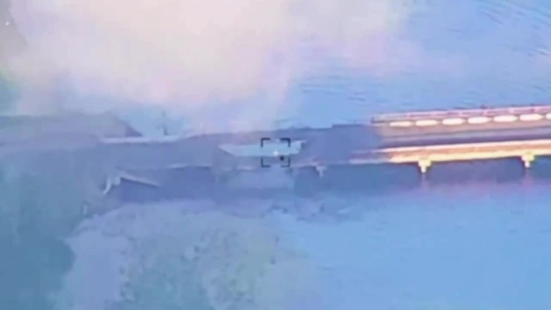

Ukraine tập kích liên tiếp hai cầu quan trọng tại tỉnh Kursk của Nga, nhằm cắt tuyến chi viện của Moskva, tạo "vùng đệm" mà học có thể kiểm soát lâu dài
Tư lệnh không quân Ukraine Mykola Oleshchuk ngày 18/8 thông báo lực lượng nước này đã phá hủy một cây cầu ở tỉnh Kursk của Nga. "Máy bay của không quân tiếp tục tước đi năng lực hậu cần của đối tượng bằng các cuộc không kích chính xác, qua đó khiến hoạt động chiến đấu của họ bị ảnh hưởng đáng kể.", ông Oleshchuk nhấn mạnh.
Video do quan chức này đăng kèm cho thấy một cây cầu bắc qua sông bị tập kích, tạo ra vụ nổ và một lỗ thủng lớn trên mặt cầu. Giới chức Ukraine không đề cập vị trí của công trình này, song các kênh Telegram Nga cho biết nó nằm ở khu vực làng Zvannoe, bắc qua sông Seim tại tỉnh Kursk.
